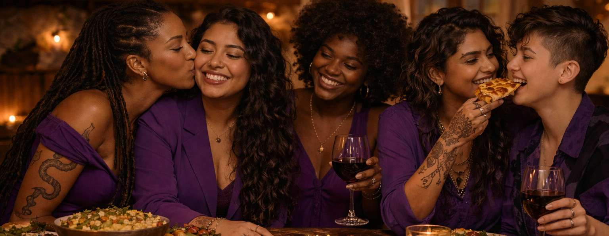
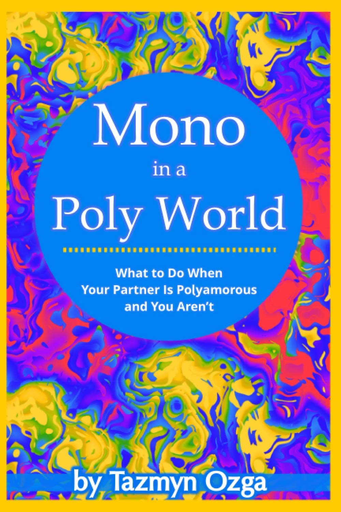
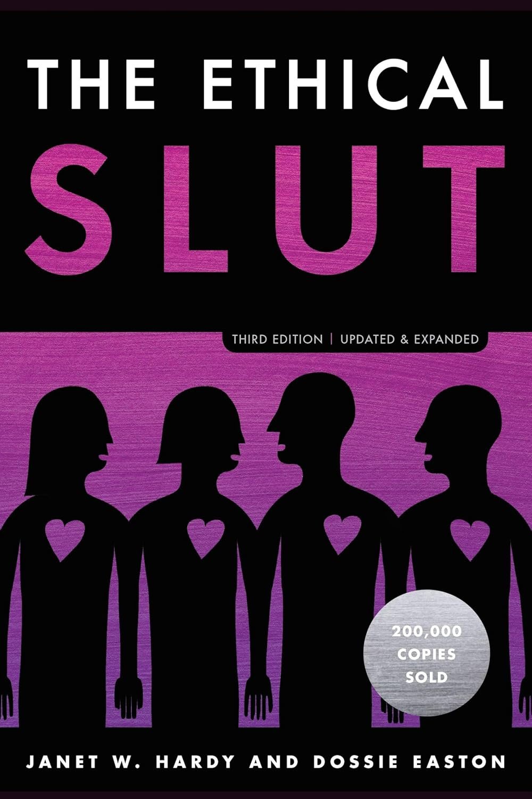
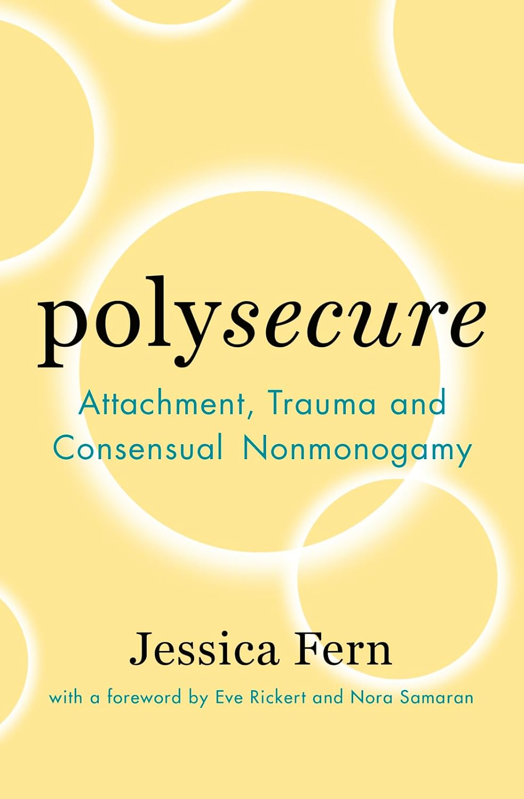

Those who are Polyamorous
Those who are Polyamorous are those who crave having multiple intimate romantic and/or sexual relationships that are rooted in honesty, loyalty, commitment, consent, affective responsibility, emotional intelligence and communication. Those who seek connections shaped by free will, freedom, independence, and autonomy.
Those who believe that love should not be limited or constrained by selfishness, jealousy, insecurity, trauma, power, egocentrism, control, fear, possessiveness, narcissism, egotism, arrogance, or societal norms.
Those who question the imposed indoctrination of monogamy, patriarchy, religion, sexism, heterosexuality, colonialism, racism, capitalism, and the nuclear family as the only way to live, to love, and to be loved.
Those who are devoted to continuously improving themselves and their relationships; who are willing to put in the work required to build healthy relationships; who have the courage to confront their trauma, the maturity to pursue emotional health, and the capacity to be empathic and patient throughout their growth process and that of their partners.
Polyamory is emancipatory, liberating and empowering

Polyamory books to read first

Mono in a Poly World
This is a guidebook and resource for those navigating monogamous-polyamorous relationships. This book covers the basics of polyamory, transitioning to polyamory and the issues that make mono-poly relationships challenging. Additionally, best practices and worst practices in consensual non-monogamy are explored, providing a roadmap for healthy relationships with compromises that can meet the needs and desires of both partners.
Tazmyn OzgaMy review
It's the perfect introduction to polyamory and the perfect, concise, spot on, brief and kind manual of polyamory. It's for monogamous people who have a polyamorous partner, for mono people who are considering polyamory, and for polyam people with a mono partner. It's a must read even for people who already are polyam/non-monogamous, and honestly, every monogamous person should read it too. I recommend for this to be the first book you read if you are entering this new polyam world. It's truly a gem. I loved it.
Kindle

Ethical Slut
The guide of choice for people curious to move beyond conventional monogamy, and for anyone interested in learning better skills for love, sex and intimacy. It will open you up to the adventure and freedom that comes from redefining the way you relate to friends and lovers. It offers techniques, skills and ideals authors have developed for practicing successful and ethical polyamory through open communication, emotional honesty and managing jealousy.
My review
The bible of polyamory. This is a more complete guide of polyamory and non-monogamy; a compilation of knowledge and practices. It's feminist, lgbtqia+, sex positive, intersectional and kinky. A must read for anyone interested in healthy relationships. I recommend it even if you are a monogamous person who wants to improve yourself, your relationships and learn how to communicate better, manage jealousy, dismantle possessiveness and be more honest, open and emotionally healthy.
Kindle

Polysecure
Using her nested model of attachment theory and trauma, Jessica expands our understanding of how emotional experiences can influence our relationships. Then, she sets out six specific strategies to help you move toward secure attachments in your multiple relationships. This is a theoretical treatise and a practical guide to emotional health, emotional intelligence, self-improvement, growth, acquiring tools & skills, and having healthy relationships.
Jessica FernMy review
It's an eye-opener. I didn't really realize that we ALL need to learn, urgently, about attachment theory. It improved my life. I not only was able to understand myself better, but also, it allowed me to empathize better with literally everyone. This is the book to read if you want to acquire emotional health. This is the book you need to read if you, your partner or whoever in your life is struggling with personal and/or family traumas, jealousy, possessiveness, control, or other emotional challenges. I can't recommend it enough.
Kindle
Love is abundant and unlimited
Polyamory types
Egalitarian
All partners are valued equitably, and there is no hierarchy or ranking of importance. Decisions are made collectively, and each person's needs and desires are considered just as crucial as those of others. This doesn't mean that all relationships are the same, but that they are all treated reasonably, justly, and with fair consideration. Affective responsibility is emphasized.
Hierarchical
Relationships are structured with primary, secondary, and/or tertiary partners. Primaries have a higher level of commitment, importance and involvement, while secondaries and tertiaries have less influence on major life decisions. Some partners have more priority than others. Some people are okay with that. As long as everyone consents, it is valid.
Relationship Anarchy
It’s a philosophy that rejects traditional relationship norms, obligations, structures, hierarchies, labels, duties, and expectations. They don't prioritize people based on romantic and/or sexual relationships, friendships or family ties. No one is more important. Each relationship is defined freely by the two people in it. Consent, honesty, and communication are key. You can be polyamorous and/or Relationship anarchy
Lap-sitting
All partners and all metamours share strong emotional bonds, intimacy, physical affection and spend time together frequently. They get involved in each other's affairs. They are lovers and/or friends. They love, care for and appreciate one another. Metamours may or may not be sexually and/or romantically involved, but they all have deep connections with each other. The utopia of polyamory.
Kitchen-table
All metamours and all partners are comfortable with each other, often sharing meals, conversations, events, and hobbies. They all want to spend time together. They can be friends, but not necessarily. Metamours maintain separate individual relationships and boundaries and do not get involved with their partners’ partners. More than garden-party, less than lap-sitting.
Garden-party
Metamours are aware of each other. They are friendly, polite, and respectful in shared spaces like social events, family gatherings, and other activities. They don't pursue friendships or romantic and/or sexual relationships with other metamours. They can all be in the same room comfortably and joyfully, but they do not form connections with their partners’ partners.
Nesting
To nest is to live with one or multiple partners, all together in a shared household, creating a family-like environment. This involves shared responsibilities, finances, and parenting (when applicable), and as well as emotional support among all partners. Nesting can be a way to deepen connections and create a sense of stability and security. Very anti-capitalist of them.
Solo-polyamory
They prioritize their independence, autonomy, personal time, space, income, goals, and their friends and family. They don't want a couple-centered life, cohabitation, shared finances, parenting, or other merged-life types of relationships. They want to have deep intimacy and romantic and/or sexual relationships, but theses are not the most important things for them. What they want for their lives matters most.
Mono-poly
A monogamous person is in a relationship with a polyamorous person. The monogamous person does not have other romantic and/or sexual relationships with anyone else, by their own free choice. However, they accept that their polyamorous partner has other romantic and/or sexual partners, and have no problem with it. As long as everything is consensual, it is valid and can be healthy.
Parallel
Couples who don't want to meet or interact in any way with their metamours. They don't want any involvement from any of their partners in any of their other relationships. They value privacy, boundaries, discretion, autonomy, individuality, and independence. This is not the healthiest type, but it can be healthy for some people, and it is still valid, as long as everyone involved consents to it.
Don’t Ask, Don’t Tell
People who have many romantic and/or sexual relationships but won’t tell their partners anything about their affairs with other people. They also don't want to know anything about what their partners do, with whom, where, when, why, or how. This is not the healthiest, but for some people it can be healthy and even necessary. It could be a good way to start polyamory.
Polyfidelity
Three, four or more people form a closed group and agree not to pursue any outside romantic and/or sexual partners beyond those within the group, unless everyone involved in the group consents to adding a new member. Not all members of the group are necessarily romantically and/or sexually involved with each other. When they are, it is called a triad, quad, etc. When they are not, it simply consists of couples and metamours who agree to exclusivity.
One-penis policy
The chauvinistic way of doing non-monogamy. The boyfriend enforces a strict policy in which the girlfriend can only be romantically and/or sexually involved with one man, one penis. The penis of the boyfriend. But, she can have as many romantic and/or sexual relationships with women as she wants. It contradicts the principles of polyamory, since it involves control, power, and limitation.
Veto Power
A couple that has the power to veto each other's other partners and/or potential partners. Whether romantic and/or sexual. They have the authority to prohibit certain behaviors and/or activities that their partner has with other partners. They can even reject potential partners or force breakups with current partners. It goes against the control-free principles and freedom that polyamory stands for.
Non-monogamy
Polyamory falls under the non-monogamy umbrella. All types of polyamory are non-monogamous, but not all forms of non-monogamy are polyamory. Like sexuality, non-monogamy exists on a spectrum. Across this spectrum, common values often include consent, mutual agreements, assertive communication, honesty, transparency, and autonomy. Polyamory embraces multiple romantic relationships, while most forms of non-monogamy permit only sexual freedom and place limits on emotional/romantic connections. While in polyamory only a few types are restrictive, in non-monogamy most types are.
Overlapping
Two or more of these polyamory styles can coexist. They are not mutually exclusive. You can be Hierarchical & have Veto power. You can be Nesting & Don’t ask, Don’t tell. You can be Solo-polyam and Egalitarian. You can be Mono-poly, follow a One-penis policy and practice Kitchen-table. You can be married & practice any of these Relationship styles may or may not overlap. The polyamory rule is: if everyone involved is aware of the arrangement and consents to it, then it is valid. But make no mistake, there are many wrong ways to do it.